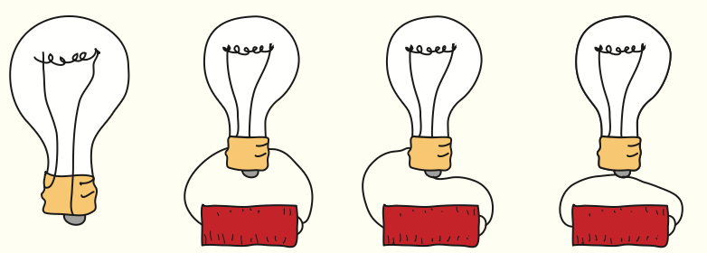
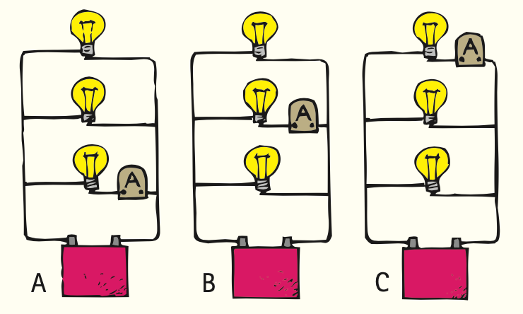
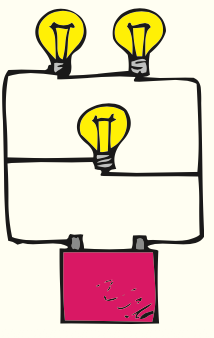

Complex Electric Circuits
Mathematical idea: Equivalent resistance summarizes how groups of resistors oppose current: series resistances add, while additional parallel paths reduce total resistance.
You will trace series, parallel, and mixed paths, compare voltage and current behavior, calculate equivalent resistance, and analyze why household wiring uses parallel branches with protective devices.
Learning Target
Students will analyze series, parallel, and mixed circuits by tracing current paths, comparing voltage drops, and explaining how circuit changes affect brightness, current, resistance, and safety.
I can statements
- I can distinguish series circuits from parallel circuits.
- I can explain why a complete circuit is required for steady current.
- I can trace current paths through simple and branched circuits.
- I can compare voltage and current in series and parallel circuits.
- I can calculate equivalent resistance in simple series and parallel circuits.
- I can explain how fuses, circuit breakers, and overloads protect circuits.
Vocabulary
These are words you will see in this section. Do not define them yet.
- circuit
- complete circuit
- series circuit
- parallel circuit
- branch
- voltage drop
- equivalent resistance
- mixed circuit
- overload
- fuse
- circuit breaker
- short circuit
Use the preview activity to decide which words you already know, recognize, or do not know yet. Watch for these words in bold when they are first introduced or defined in the reading.
Preview: Skim Before You Read
Directions
Before reading closely, skim the vocabulary list and the section. Look at titles, headings, bold words, pictures, captions, diagrams, tables, and formulas. Do not try to understand everything yet. Your job is to notice what already looks familiar and make predictions about what this section may explain.
Step 1 — Sort the vocabulary. Write each vocabulary word in the column that best matches what you know right now. You may move a word later.
| Know for sure | Recognize | Don’t know yet |
|---|---|---|
Step 2 — Skim the section. Record what catches your attention before you read closely.
| What I noticed | |
|---|---|
| What I predict | |
| What I wonder |
Content: Read, Look, Annotate, Apply
Directions
Read in short chunks. Annotate the prose and the figures together: underline evidence, circle or highlight bold vocabulary, label arrows or measured features, connect a sentence to an image, and write short questions or connections in the margins.
Reading 1: Complete Paths and Series Circuits
A circuit is a conducting path along which charges can move. For sustained current, the path must be a complete circuit with no gap. A switch controls the path: in circuit language, an open switch breaks the path and a closed switch completes it.
In a series circuit, devices lie along one continuous pathway. Because there is only one route, the same current passes through each series device. If one device opens the path, current stops everywhere in that series loop.
The source voltage is shared among series devices as energy is transferred. A voltage drop across a device is the potential difference associated with that device. The individual voltage drops across series devices add up to the source voltage, while the same current passes through all of them.
Adding series resistors increases the overall opposition to current. The equivalent resistance of series resistors is the sum of their resistances. With the same battery, more total resistance means less circuit current, which is why adding identical bulbs in series can make each bulb dimmer.

Image read: Trace one continuous current path through all three lamps. Mark where opening any one connection would stop the whole loop.

Image read: For each arrangement, trace a path from one battery terminal through the bulb filament and back to the other terminal. Circle the complete circuits.
Stop and Discuss
- What evidence in the series-circuit figure shows there is only one current path?
- Why does opening one series device stop current through all the others?
- How are current and voltage different in a series circuit: which is the same through devices, and which is divided across devices?
Series resistances add because the same current must pass through each resisting device one after another.
The equivalent resistance is larger than any one resistor in the series path.
Example 1: Add Series Resistance
A 4-Ω resistor and a 6-Ω resistor are connected in series.
- Calculate the equivalent resistance.
- At the same source voltage, would this two-resistor series circuit allow more or less current than the 4-Ω resistor alone? Explain.
You Try It 1: Three in Series
Resistors of 2 Ω, 3 Ω, and 5 Ω are connected in series.
- Calculate the equivalent resistance.
- Explain what happens to all devices if the only path is opened at one point.
Reading 2: Parallel Circuits: Branches and Shared Voltage
A parallel circuit provides more than one path between the same two points. Each separate path is a branch. A break in one branch does not automatically break the others, which is why household devices can operate independently.
Parallel branches share the same voltage because each branch connects to the same pair of circuit points. Current divides among the branches. The total source current must supply all of those branch currents, so adding an operating branch can increase the current drawn from the source.
Adding another parallel path decreases the overall resistance of the circuit. This may feel backward at first, but a new branch gives charge another available route. The equivalent resistance of a parallel combination is therefore less than the resistance of any single branch.
The parallel equivalent-resistance relationship is written with reciprocals. Use it carefully, and check the physical result: if your calculated equivalent resistance is larger than every branch resistance, something is wrong.

Image read: Color or trace each separate branch from point A to point B. Mark the same source voltage across every branch.

Image read: Compare where each ammeter sits: in a branch or in the main line. Predict which readings represent branch current and which represent combined current.
Stop and Discuss
- Why can one parallel branch be opened while the others continue operating?
- What quantity is the same across parallel branches, and what quantity divides among them?
- Why must parallel equivalent resistance be less than any one branch resistance?
Each added parallel branch creates another path for current, so total opposition decreases.
Reasonableness check: $R_{eq}$ must be smaller than the smallest individual branch resistance.
Example 2: Two Parallel Resistors
A 6-Ω resistor and a 3-Ω resistor are connected in parallel.
- Use the parallel relationship to determine the equivalent resistance.
- Check that your answer is smaller than both branch resistances.
You Try It 2: Equal Parallel Branches
Two 4-Ω resistors are connected in parallel.
- Determine the equivalent resistance.
- Explain in words why adding the second branch lowers total resistance instead of raising it.
Reading 3: Mixed Circuits and Path Reasoning
Real circuits often contain both connection types. A mixed circuit has some components in series and others in parallel. The safest first step is not to calculate—it is to trace paths and identify which components truly share the same two endpoints.
In a mixed circuit, the main-line current can split at a junction, move through different branches, and recombine later. Components before or after the branch region may carry the combined current, while components inside branches carry only their branch currents.
Brightness questions are really energy-transfer questions connected to voltage, current, resistance, and power. The supplied practice diagram is useful because a student must decide which bulbs share paths rather than judging by how close the bulbs look on the page.
When one component is removed, ask which paths are actually broken. If the removed bulb lies in a branch, another branch may remain complete. If it lies in the only series path feeding several branches, more of the circuit can be interrupted.

Image read: Trace the main line to the first junction, mark the separate branches, and show where they recombine. Identify which bulb is in series with the branch network.
Stop and Discuss
- Before doing any calculation in a mixed circuit, what should you identify first?
- In the mixed-circuit image, which currents are branch currents and where do they recombine?
- Why can removing one bulb have different effects depending on where that bulb sits in the network?
Example 3: Trace Before Calculating
A circuit has one resistor in series with a pair of resistors that are connected in parallel.
- Describe the current path before the split, through the branches, and after recombination.
- Which part carries the combined current: a single branch or the series portion? Explain.
You Try It 3: One Bulb Removed
In a mixed circuit, one bulb is removed from only one of two parallel branches.
- Does the other branch still have a complete path? Explain.
- Would removing a component in the single series section feeding both branches have the same effect? Explain.
Reading 4: Household Circuits, Overloads, and Protection
Household devices are normally connected in parallel so each branch receives the supply voltage and can operate independently. Adding more operating branches lowers the overall resistance and increases the total current demanded from the supply.
If too many devices draw current through the same supply wiring, the circuit can become an overload. The textbook example adds an 8-A toaster, 10-A heater, and 2-A lamp to reach a 20-A line current. Too much current can overheat wiring.
A fuse protects a circuit with a metal element designed to melt when current becomes too large, opening the circuit. A circuit breaker serves a similar purpose with a resettable switching mechanism. Both interrupt current rather than “giving extra electricity somewhere to go.”
A short circuit is an unintended path with very low resistance. By Ohm’s law, a very small resistance across a source can allow a very large current, so protective devices are essential. Safety reasoning therefore connects this section back to voltage, resistance, current, and power.

Image read: Add the labeled branch currents and compare the sum with the current through the fuse in the main line.

Image read: Trace current through the fuse ribbon and mark what happens to the path when the ribbon melts.
Stop and Discuss
- Why are household devices wired in parallel instead of one long series chain?
- Use the household figure to explain why adding branches can increase main-line current.
- How do a fuse and circuit breaker protect wiring, and how is a short circuit related to resistance?
Example 4: Overload Reasoning
A household branch circuit already supplies several high-power devices, and another large device is switched on.
- Predict what happens to total line current.
- Explain why a correctly rated breaker may open the circuit.
You Try It 4: Short-Circuit Claim
A student says, “A short circuit is safe because the path is shorter, so charges do less work.”
- Identify the error in the claim.
- Use resistance and current to explain why a short circuit can be dangerous and why a fuse or breaker is useful.
Vocabulary: Define the Terms
You have now seen these words in the reading, images, and practice. Use this table to consolidate the physics meaning of each term.
| Vocabulary term | Definition |
|---|---|
| circuit | A conducting path along which electric charge can move. |
| complete circuit | A circuit with an unbroken path that permits sustained current. |
| series circuit | A circuit in which devices share a single current path. |
| parallel circuit | A circuit in which devices are connected on separate branches between the same two points. |
| branch | One of the separate conducting paths in a parallel portion of a circuit. |
| voltage drop | The potential difference across a circuit device, representing energy transferred per charge in that device. |
| equivalent resistance | A single resistance value that has the same overall effect on the source as a group of resistors. |
| mixed circuit | A circuit containing both series and parallel connections. |
| overload | A condition in which a circuit carries more current than its wiring is designed to handle safely. |
| fuse | A protective device designed to melt and open a circuit when current becomes too large. |
| circuit breaker | A resettable protective switch that opens a circuit when current becomes too large. |
| short circuit | An unintended very-low-resistance path that can allow dangerously large current. |
Summary
- A complete circuit provides an unbroken path for sustained current.
- Series circuits have one path: the same current passes through each device and series resistances add.
- Parallel circuits have branches: each branch connects the same two points, shares the same voltage, and added branches reduce equivalent resistance.
- Mixed circuits combine series and parallel regions, so path tracing should come before calculation.
- Household circuits are parallel; overloads and short circuits can create excessive current, and fuses or breakers protect wiring by opening the circuit.
Common Mistakes
| Mistake | Why it is tempting | Check instead |
|---|---|---|
| Open switch means current can pass because the switch is “open.” | Everyday door language works the opposite way. | In circuit language, open means a gap; closed means a complete conducting connection. |
| Current is used up by each series bulb. | Bulbs transfer energy, so something clearly changes. | Charge/current continues around the loop; energy per charge is transferred in devices. |
| Parallel resistance should be larger because there are more resistors. | Adding components sounds like adding obstacles. | Parallel adds paths, so equivalent resistance becomes smaller. |
| A fuse provides a safe place for extra current to go. | Protection devices are drawn as extra components. | A fuse or breaker opens the circuit when current is too large; it does not store or redirect “extra electricity.” |
State one defining feature of a series circuit and one defining feature of a parallel circuit.
Two 8-Ω resistors are connected in parallel. Determine the equivalent resistance and explain why the answer must be less than 8 Ω.
What is one thing you learned in this section? Explain it in at least one complete sentence.
What is one thing from this section you still need to understand or practice more? Be specific.